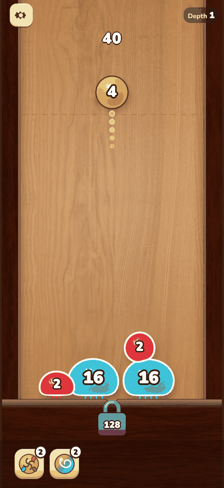

AI-assisted game developer
From a gameplay video to a playable prototype.
I study a reference game from public footage, write a structured teardown and a design spec, then build a playable mobile web prototype with AI coding agents. I make the design calls, review what the agents produce, and playtest and QA every build. Everything below runs in a phone browser.
Games
Portrait, touch-first, single-page web builds. Six are adaptations of a reference mobile or PC game I analysed; two are original concepts. No art, audio or text from the reference games is used.





Hot Glass
A glassblower's working day: blow, spin and reheat living glass to match five customer orders before it cools or bursts.
Original game: research, 10 concepts, one picked and built

Silk Until Dawn
One night as a garden spider: string silk between supports, catch moths drawn to the lantern, eat your fill before dawn.
Original game: research, 10 concepts, one picked and built
Pipeline
Each prototype goes through the same five steps. AI agents do much of the analysis drafting and the coding. I set the direction, make the design decisions and check the result at every step.
-
Gameplay video
Public recordings of the reference game, store pages and reviews are collected; key frames are extracted as evidence.
My part: choose the reference game and the recordings worth studying, and decide what question the analysis must answer.
-
Teardown report
An agent drafts a structured HTML teardown: core loop, rules, economy, first-session flow, each claim tagged as observed, inferred or unknown and linked to a frame.
My part: check claims against the footage, flag guesses, and judge what makes the game work and what to fix in a remake.
-
Design spec
A DESIGN document maps every rule of the adaptation to the teardown: kept as observed, adapted, or newly designed. Acceptance cases are written up front.
My part: theme and art direction, onboarding, economy and pacing choices, scope, and what not to copy.
-
Prototype
Coding agents (Codex, Claude) implement the game in TypeScript / JavaScript with Canvas, WebGL or three.js and ship a single self-contained HTML file. Assets are sourced under CC0, CC BY or OFL licences.
My part: break work into tasks, review builds, reject what doesn't feel right and iterate on feel and readability.
-
Playtest & QA
Rule tests, headless balance bots, end-to-end runs on the release file with touch input, long-session runs and layout checks across screen sizes.
My part: play the builds on phone and desktop, write bug reports and checklists, and decide when a build is ready.
What I decide
- Which reference game to study and why
- The design of the adaptation: theme, loop changes, onboarding, economy
- Scope and priorities for each iteration
- Whether a build feels right and is ready to show
What the agents generate
- First drafts of teardown reports from footage and public sources
- Game code, build scripts and automated tests
- Asset sourcing with licence evidence and credits screens
- Test harnesses: balance bots, end-to-end and session runs
Teardowns
Long-form HTML reports with embedded evidence frames. Large files (3–18 MB), best read on desktop.
Drill Core (Hungry Couch Games / tinyBuild)
Read teardown
Mining management and tower defence roguelite. Basis for Deep Contract.
Shogun Showdown (Roboatino)
Read teardown
Single-lane, turn-based tactical roguelite. Basis for a mobile design adaptation, not yet built.
Gummy Worm Go!
Read teardown
3D jelly-worm runner with a city-building meta. Basis for Sugar Siege.
Brainrot Run: Merge Battle
Read teardown
Crowd runner feeding a merge auto-battle. Basis for Mishmash Run.
Number Master: Run and merge
Read teardown
Number runner with a wall-staircase payout. Basis for Digit Dash.
Blob Merge 3D
Read teardown
Physics merge drop puzzle. Basis for Sticky Blob Descent.
Spinner Merge
Read teardown
Spinning-top merge auto-battler. Basis for Brambleforge.